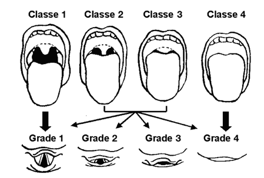
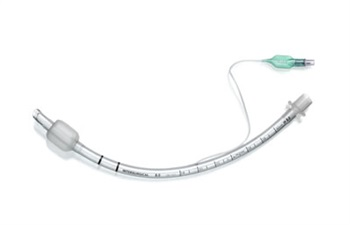
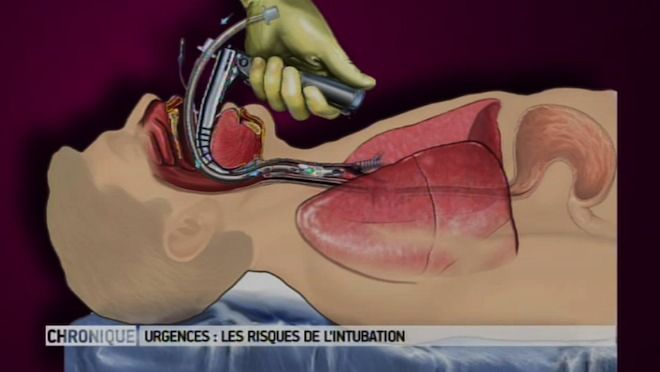

L'intubation tracheale
Definition
L’intubation est le catheterisme de l’orifice glottique et de la trachee, par une sonde d’intubation semi-rigide dont l’extremite emerge par la bouche (intubation orotracheale), ou par le nez (intubation nasotracheale).
Cadre legislatif
Acte medical, rele infirmier de collaboration : art. R.4311-10 decret 2004-802 du 29/07/2004.
Objectif
Permet une ventilation artificielle lorsque la fonction respiratoire et que les troubles de la conscience engendrent une alteration du carrefour aero-digestif.
Indications
Detresse respiratoire.
Detresse circulatoire.
Troubles de la conscience ne permettant plus d'assurer la protection des voies respiratoires : score de Glasgow inferieur a 7.
Detection de l'intubation difficile
Les classes de Mallampati

Classe 1: toute la luette et les loges amygdaliennes sont visibles.
Classe 2: la luette est particulierement visible.
Classe 3: le palais membraneux est visible.
Classe 4: seul le palais osseux est visible.
Les grades de Cormack

Grade 1: toute la fente glottique est vue.
Grade 2: seule la partie anterieure de la glotte est vue.
Grade 3: seule l'epiglotte est visible.
Grade 4: l'epiglotte n'est pas visible.
Materiel
Plateau d'intubation :
Sondes d'intubations endotracheale steriles a usage unique de differentes tailles :
Sondes a ballonnet :
Diametre 7,5 - 9 : homme.
Diametre 7 - 8 : femme.
Diametre 6,5 - 7,5 : adolescent.
Diametre 5 - 6,5 : enfant.
Sondes sans ballonnet : pour un diametre de sonde inferieur a 5 afin d'eviter les lesions de la trachee :
Diametre 4 - 5 : jeune enfant.
Diametre 2,5 - 4 : nourisson.

Laryngoscope :
2 manches de laryngoscopes en etat de fonctionnement : un manche long – un manche court.
Lames courbes types Macintosh :
Taille 3 et 4 : adulte.
Taille 2 : enfant.
Taille 1 : nourisson
Lames droites type Miller pour les intubations difficiles :
Taille 3 : adulte.
Taille 2 : enfant.
Taille 1, 0 et 00 : nourisson.
Piles de rechange.
Seringue de 10 ml.
Manometre pour verifier la pression de gonflement du ballonnet.
Canule oropharyngee de type Guedel de taille adapte a la morphologie du patient :
| Canule oro-pharyngee de Guedel |
| Age |
Taille traditionnelle |
Taille normalisee (cm) |
Couleur |
| Nouveau-ne |
000 |
3,5 |
Rose |
| Nourrisson |
00 |
5 |
Bleu |
| Jeune enfant |
0 |
6 |
Gris |
| Enfant |
1 |
7 |
Blanc |
| Adolescent |
2 |
8,5 |
Vert |
| Adulte |
3 |
9 |
Orange |
| Adulte |
4 |
10 |
Rouge |
| Grand adulte |
5 |
11 |
Violet |
| taille : distance entre le lobe de l'oreille et la commissure labiale |
- Pince de Magill : permet de diriger la sonde endotracheale dans le larynx et faciliter sa direction dans la trachee.
- Mandrin souple : permet de modifier la courbure de la sonde d'intubation
- Lubrifiant : spray de silicone pour lubrifier la sonde.
- Anesthesique local en spray : lidocaene (Xylocaine 5%e).
- Sparadrap ou cordon de fixation pour la sonde d'intubation.
- Materiel d'oxygenation :
- Source d'oxygene.
- Ballon Autoremplisseur a Valves Unidirectionnelles : BAVU.
- Masque adapte a la morphologie du patient.
- Respirateur en etat de marche et preregle.
- Raccord coude : raccorde la sonde au respirateur.
- Filtre antibacterien :
- Permet de prevenir une infection bronchopulmonaire.
- En cas de vomissement, permet d'eviter la propagation du liquide gastrique dans le systeme de ventilation.
- Materiel d'aspiration :
- Source de vide munie d’un manometre.
- Receptacle a usage unique.
- Tuyaux.
- Pince stop-vide : permet de declencher des aspirations intermittentes.
- Sonde d’aspiration sterile de calibre adapte : en fonction de l’aspiration : nasopharyngee, tracheale, buccale.
- Compresses steriles.
- Autre materiel :
- Stethoscope.
- Gants steriles a usage unique.
- Gans non sterile a usage unique.
- Bavette et lunettes de protection pour le medecin.
- Sac a elimination des dechets.
- Necessaire a l'hygiene des mains.
Realisation du soin
Installation
Effectuer un lavage simple des mains ou effectuer un traitement hygienique des mains par frictions avec une solution hydro-alcoolique : hygiene des mains.
Oter les protheses : dentaire, oculaire, auditive, piercing (levre et/ou langue).
Installer le patient en decubitus dorsal. Mettre un billot sous la nuque ce qui provoque une hyperextension qui permet de liberer les voies aeriennes superieures.
Decoller la tete de lit du mur, monter le lit a hauteur voulu par le medecin et eter la tete de lit.
Verifier le monitorage du patient et noter ses parametres : scope, tension arterielle, pulsations, saturation, frequence respiratoire. Sinon monitorer le patient.
Verifier la presence et le fonctionnement du plateau d'intubation (tester le ballonnet avec la seringue pour verifier son etancheite), du systeme d'aspiration et du systeme de ventilation artificielle.
Verifier la voie d'abord veineuse : faire un reflux. En l'absence de perfusion, en poser une.
Poser une sonde nasogastrique sur prescription medicale : permet de vidanger le contenu gastrique et prevenir le risque de syndrome de Mendelson : inhalation du contenu gastrique.
Aide a l'intubation orotracehale realisee par le medecin
Preoxygenation : le ballon autoremplisseur a valves unidirectionnels : BAVU
Preoxygenation au ballon avec 100% d'oxygene (FiO2 : 1) durant 3 a 5 minutes.
Utilisation d'un BAVU (Ballon Autoremplisseur a Valves Unidirectionnels) :
Ne pas pressez la totalite du ballon pour les insufflations : un BAVU a une capacite de 2,5 litres alors que le volume courant respiratoire est de 600 ml, un fermement du poing suffit.
FiO2 (Fraction inspiree en oxygene) :
BAVU seul = FiO2 21 % = FiO2 atmospherique ambiante.
BAVU + bouteille O2 (debit a 15 litres/min) = FiO2 50 %.
BAVU + bouteille O2 (debit a 15 litres/min) + reserve = FiO2 100 %.
L'induction de l'anesthesie
Anesthesie par voie intraveineuse : induction en sequence rapide :
1er : Hypnotique : action sedative et endormissement.
2nd : Curare : myorelaxant qui entraene une paralysie des muscles.
- Des la perte de conscience, le medecin ouvre la bouche du patient par la manœuvre de Sellick : compression du cartilage cricoede pour proteger la trachee d'une inhalation de liquide gastrique par regurgitation.
Intubation
- Introduction du laryngoscope jusqu'au sillon epiglottique.
- Souleve le maxillaire inferieur a l'aide du manche ce qui permet de visualiser l'orifice glottique.
- Introduction de la sonde : des l'apparition de petites contractions musculaires visibles quelques instants apres l'injection du curare.
- Le ballonnet doit se situer environ a 2 centimetres en dessous des cordes vocales :
- Soit a environ 23 cm des arcades dentaires chez l'homme.
- Soit a environ 21 cm des arcades dentaires chez la femme.
- Retrait du laryngoscope et de la pince de Magill ou du mandrin ni utilises.
- Gonfler le ballonnet : volume indique sur la sonde : objectif : < 25 mmHg ou 30 cmH2O.

- Raccorder la sonde au filtre antibacterien puis au systeme de ventilation artificielle.
- Verification du bon positionnement de la sonde : auscultation des champs pulmonaires et du creux epigastrique.
- Faire une marque au feutre indelebile sur la sonde d'intubation au niveau de la levre : sert de repere.
- Fixer la sonde avec le cordon ou le sparadrap.
| Video d'une intubation oro-tracheale |
Risques et complications
Collapsus de reventilation : chez les personnes hypercapniques : risque d'une chute brutale de la pression arterielle des que la ventilation du patient est correcte : prevention par perfusion d'un solute de remplissage.
Blessure de la levre inferieure par ecrasement contre l'arcade dentaire lors de l'introduction de laryngoscope.
Fractures dentaires.
Laryngospasme.
Syndrome de Mendelson : inhalation bronchique de liquide gastrique : mise en place d'une aspiration gastrique.
Intubation selective de la bronche droite : sonde trop enfoncee.
Intubation œsophagienne.
Lesion des cordes vocales.
Extubation accidentelle.
Soins infirmiers
Surveillance de la sonde d’intubation : verifier la position, la pression du ballonnet, changer les fixations.
Soins oro-pharynges : maintenir une hygiene buccale.
Soins des fosses nasales.
Soins oculaires : prevention du dessechement et des ulcerations de cornees.
Aspiration bronchique : limite l’encombrement bronchique, favorise l’hematose, maintient la permeabilite de la sonde.
Surveillances et evaluations
Fixation de la sonde d'intubation.
Positionnement de la sonde d'intubation : repere.
Pression de gonflement du ballonnet.
Observation des mouvements thoraciques : memes amplitudes et symetrie parfaite.
Verification des mouvements et de l'amplitude respiratoire.
Absence de fuites au niveau de la sonde et du circuit de ventilation.
Encombrement.
Quantite et qualite des secretions.
Auscultation des 2 champs pulmonaires : murmure vesiculaire clair et symetrique.
Capnographie : enregistre la presence de CO2 dans la phase expiratoire de la ventilation.
Frequence respiratoire, SpO2.
Radiographie pulmonaire.
Installation du patient : semi-assis +45e pour limiter les risques de reflux gastrique.
Voir aussi :
Module urgences reanimation
Module pneumologie
La ventilation artificielle